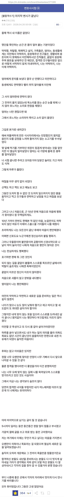

변호사시험은 5회 응시 이후엔 평생 응시자격이 박탈된다

변호사시험은 5회 응시 이후엔 평생 응시자격이 박탈된다
5할이긴 한데 시험이 5일씩 되기도 하고 중간에 이번시험 ㅈ댄겉같아 포기하는사람도 수백명씩 되는데 그사람들은 모수에서 빼버림
그래서 4할쯤 될듯
많이 어려운건가?
사실 뭐 학부에서 걸리고 리트에서 걸리고 졸시에서 걸리고 다 거른사람들끼리 하는데 저 합격률이니까 ㅋㅋㅋ
그래도 예전 사시보단 쉬울거 같음
점점 더 난이도 올라가서 최근에는 사시수준이긴 함 ㅋㅋㅋ
어후 그럼 빡세긴 하구나
근데 로스쿨 제도 도입이 여러 이유가 있지만
더 많은 변호사 배출 목표로 알고 있는데
변협에서 지들 파이 줄어드니 합격률을 갈수록 낮추는건가
ㄴㄴ 합격자수는 사시보다 70%정도 더 늘었고 합격자수는 유지중임
다만 떨어진사람들이 누적되니까 합격률이 떨어지는거 ㅋㅋㅋㅋ
변시 준비하는거랑 법무사랑 많이 다른가??
많이 다름.. 법무사 비슷한 자격증 취득하고 로스쿨 가서 변호사되었는데, 법무사 등 자격증은 1차 객관식, 2차 사례형 주관식(2일 정도)으로 시험이 진행되는데, 변시는 같은 날 오전 객, 오후 사례형, 저녁 기록형 시험을 봐야됨. 각 과목도 한 과목이 아니라, 공법은 행정법, 헌법, 형사법은 형법, 형소법, 민사법은 민법, 상법, 민소법을 각각 공부해야되고, 각 과목을 객, 사례형, 기록형으로 준비해야됨.. 변호사시험 공부는 해도 시험은 두번 못치겠더라
알려줘서 고마워~ 좋은하루 되길 바래~~
대학4년 군대2년 로스쿨3년 변시5년..
나라면 저렇게 글 못쓸거같음 ㅠㅠ
늦게나마 원하는거 찾아서 행복하게 살길..
로스쿨 입시도 보통 2년은 하지
고등학교 때 늘상 전교 1-2등 하고, 설대 법대 간 애가 사시에 몇 번 떨어지더니 머리 절반이 벗겨지고, 자부심 넘치던 표정이 무언가에 쫓기듯 초췌하게 변하는 걸 보고 엄청 놀랐던 기억이 있음. 이 정도로 공부 잘 하는 애가 떨어지는 시험이란 건 대체 무슨 난이도인 거냐...
저 글 쓴이는 그래도 주변을 좋은 사람으로 둘렀네. 앞으로의 일은 부디 잘 풀리시기를...
진짜들은 인생을 갈아넣는다는걸 본 뒤로는 5트 제한 잘한거라고 봄
노무사 도전해보면 되지않을려나 과목도 겹칠텐데
5떨이면 진짜 정신나갈거같은데
나였으면 폐인됐을듯
그니까 다들 국시 합격률 95퍼 의치한에 몰리지.
아이고
한국도 있었네
독일도 1번인가 2번 떨어지면 시험을 못본다고 하더만
대신 그쪽 계열로 빠질 수 있는 기회를 준다던데
우리나라도 비슷한가 ?
우리나라는 대부분의 영역에서 실패한 사람에게 기회를 찾아주진 않아... 스스로 다시 일어서야해
아쉽네...
그쪽 계열로 빠질 수 있는 기회를 준다는게 무슨 의미임? 취업을 할 수 있게 도와준다는거야 아님 어떤걸 하게 해준다는거야? 취업은 그냥 법무법인이나 그런데 지원하면 됨. 근데 변호사 준비하던 사람이 그런델 갈까...?
변호사 말고 뭐 다른 법조계 직업은 가능할 수 있게 해준다 그런 느낌이였던거 같음
시험 탈락 후 가능한 진로
• 기업 취업 (Wirtschaft & Compliance): 독일 기업들은 법적 소양(Rechtskenntnisse)을 갖춘 인재를 선호합니다. 준법 감시(컴플라이언스), 계약 관리, 인사(HR) 부서 등으로 진출합니다.
• 행정 공무원: 법학 전공 지식은 일반 행정고시나 공공기관 취업 시 강력한 무기가 됩니다. 판·검사나 변호사가 아니더라도 공직 사회에서 법률 전문가로 일할 수 있습니다.
• 법률 컨설턴트 및 세무·노무 분야: 정식 변호사 자격이 필수가 아닌 세무 대리, 노무 컨설팅, 로펌 내 페이퍼 워크 담당 연구원 등으로 활동할 수 있습니다.
• 언론 및 출판업: 법학 전문 기자나 법률 도서 출판 편집자 등으로 전향하는 경우도 많습니다.
이런식이라네? AI가 말하기론..?
이건 그냥 진로잖아. 기회를 준다는건 약간의 특혜를 준다는거 아님? 공무원 1차 시험을 통과시켜준다거나. 저런건 현재 우리나라 변시 탈락한 사람들도 가는거임. 취업은 각 기업 인사팀이나 법무팀으로 가기도 하고, 공무원은 공무원 시험치면 됨. 나머지도 동일하고. 우리나라도 똑같음. 탈락자가 결정하는거지.
비슷하게도 회계사 1차만 통과한 사람은 기업 회계팀 들어갈 때 1차 합격이라고 써도 나름 스펙이 됨.
그냥 똑같이 취준하고 다른 법관련 시험치면 아무도 말안함. 단지 5번 시험치고 탈락하면 로스쿨 3년 + 시험 5년 날린거니 쳐다도 보기 싫어서 안할뿐이지.
그냥 로스쿨전에 사시가 있던 시절 사시 합격 못한 법학과나온 사람이랑 똑같이 다른거 하면 됨.
사법고시 폐인 막는다는 이유로 로스쿨 만들었는데 별 차이는 없는 듯.
폐인 방지는 사시 5트 제한만 걸어도 되는 거 아니었음?
결국 돈 없으면 율사도 못 하게 만든 사다리 걷어차기였다는 생각
정확하게는 다름. 변호사시험은 로스쿨 졸업 후 5년이내에 합격해야함. 지원하지 않아도 5년 내에 합격 못하면 지원불가임. 사법고시는 그렇게 하기 어렵잖아. 어떤 사람이 5번 지원하는걸 5년동안 할지 10년동안 5번만 지원할지 지원자 마음이라서 차라리 로스쿨이 낫다고 생각함. 오히려 로스쿨을 미국처럼 방통대까지 풀어서 누구나 볼 수 있게 하는게 좋을듯.
사법고시도 첫 응시부터 5년 잡으면 됨. 이후 응시 불가. 이런 걸로 로스쿨로 바꿀 명분은 그다지 크지 않다고 봄. 방통대까지 풀면 사시랑 뭔 차이임? 로스쿨 비싼 학비를 없애야 함
합격률이 높다는 점에서 사시랑 다른 거지 ㅋㅋ 응시생 풀을 제한해서 잠재적 고시낭인을 최소화하는 데에만 주력한 제도임
근데 이제는 변시붙는다고 다 누구나 급이다른 천룡인의 삶을 사는게 아니기 떄문에 훌훌털고 새시작하기 예전보다는 나을것같음
변시를 5수 해서 안되는거면 그냥 그 시험에 안맞는거임 엔간하면 되는 시험인데
합격률이 5할인데 "엔간하면"은 아닐지도...
반이나 합격하는 시험이 대체 뭐있냐?
의대같이 대놓고 봐주는 형식적인 시험말고
선발하는 시험이고 취업이고 죄다 50%가 안되는데
행시가 변시보다 개개개어려운데
변시 정도면 개꿀껌이지
5수면 변명할게 있나.. 인생긴데 다른거라도 해야지
솔직히 5수도 너무 많은 것 같다.
시험 4번까진 등꼴빨아먹다가
마지막 5번볼때 공부했겠지 ㅋㅋ
어느 정도 합격선 바라볼 수 있는 레벨 아니면 로스쿨 차원에서 졸업을 안 시켜주기 때문에 그렇지도 않음 ㅋㅋ
3수까지로 제한해야
학부연고대애들도 지방로(원광로 등) 많이감..
지방로라고 지방대가 아님